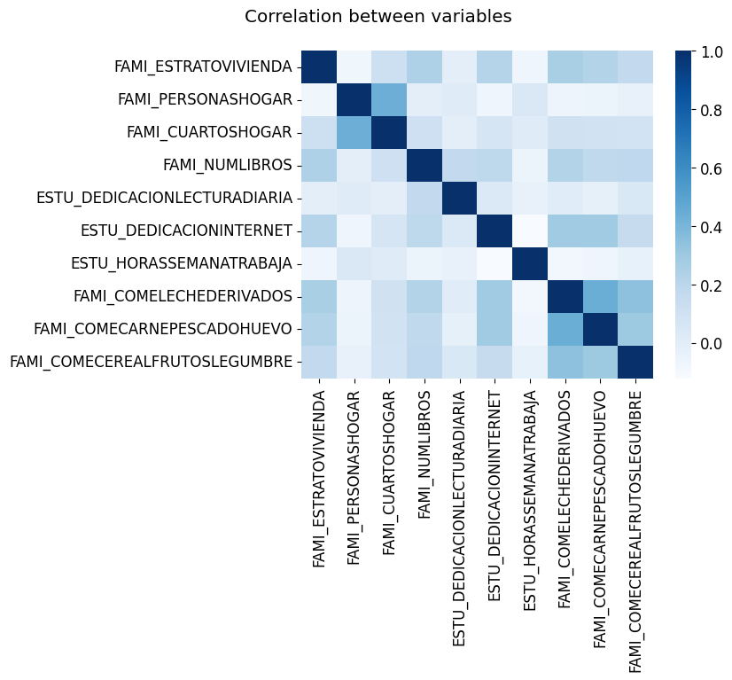
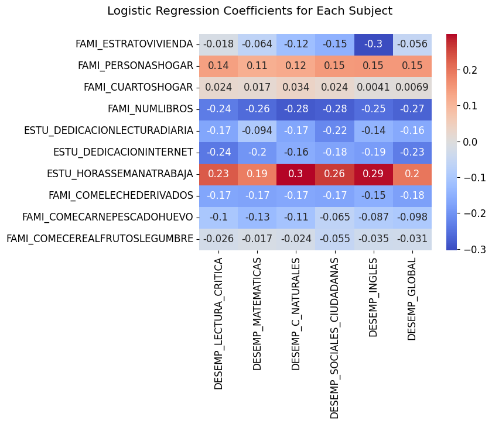

Objectives: Our main objective is to develop Logistic Regression Models capable of predicting a test taker’s global and subject-specific Saber 11º test performance given their socio-economic characteristics. Our secondary objective is to understand the relation between test takers’ characteristics and their Saber 11º test performances through the development of said models.
For our first choice of a ML Model, we have chosen a multi-class Logistic Regression Model. We developed multiple such models employing the variables 'FAMI_ESTRATOVIVIENDA' (social stratum), 'FAMI_PERSONASHOGAR' (number of people residing at household), 'FAMI_CUARTOSHOGAR' (number of rooms at household), 'FAMI_NUMLIBROS' (number of books at household), 'ESTU_DEDICACIONLECTURADIARIA' (daily hours dedicated to reading), 'ESTU_DEDICACIONINTERNET' (daily hours of internet usage), 'ESTU_HORASSEMANATRABAJA' (weekly working hours), 'FAMI_COMELECHEDERIVADOS' (frequency of milk derivatives in diet), 'FAMI_COMECARNEPESCADOHUEVO' (frequency of meat, fish and eggs in diet), and 'FAMI_COMECEREALFRUTOSLEGUMBRE' (frequency of cereals, fruits and legumes in diet) in order to predict test takers’ Saber 11º test performance. This performance is divided in three levels for each subject: low for scores below 36, average for scores 36-65, and high for scores above 65. As for the global performance, the criteria for each level is: low for scores below 200, average for scores 200-300, and high for scores above 300.
We chose these variables as they are all numerical, relevant for our analysis, and fitting for the type of model we have picked. Having checked for the correlation between them, we found they are not linearly dependent.
For the validation method, we will be using k-fold cross validation, which involves dividing the data in k sections, training the model in k-1 of them and testing it on the remaining section. This process is repeated k times, and each section acts as test data once. The final validation metrics will be the average of the metrics throughout the k iterations. For our situation, k will take the value of 5, and the method will be stratified, meaning that we will make sure all classes are proportionally represented in each fold.
For the validation metrics, we will be using:
The validation metrics reveal that there is much room for improvement. While accuracy scores are relatively solid, with all metrics exceeding 60%, other metrics paint a more nuanced picture. Precision scores, mostly above 50% with a minority crossing the 70% threshold, indicate that a substantial portion of the models' class predictions are accurate. However, recall scores exhibit dramatic variability, ranging from near-perfect (above 90%) to extremely low (below 1%), highlighting the models' inconsistent ability to correctly predict the test takers' performance levels across different classes. The same can be said about F1-scores. Overall, these metrics indicate that the models are not satisfactory at predicting all classes. Majority of them are well-fitted to one or two classes, but not all three.
These observations suggest that the chosen input variables may not sufficiently influence the test performance levels, or perhaps the Logistic Regression Model was not the most suitable choice for this analysis. Likely, it is a consequence of the use of approximated values for some input variables, rather than their actual figures. An examination of class distributions against model performance reveals that the uneven representation of classes had significant adverse effects on the predictions of underrepresented classes. A clear path for enhancement is the inclusion of more data for these classes, which promises to substantially improve model accuracy.
From the analysis of coefficients, we conclude that: